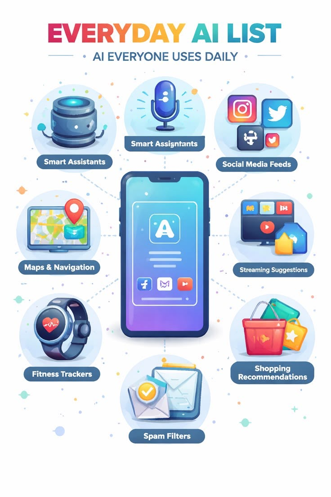
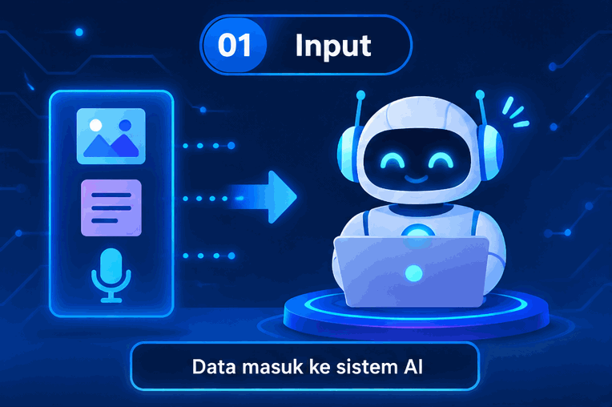

Mengenal AI
Pelajari pengertian, sejarah, karakteristik, dan jenis kecerdasan buatan.
Pelajari materi →Pelajari bagaimana kecerdasan buatan bekerja, manfaatnya dalam kehidupan, serta tantangan yang perlu kita pahami di era digital.
Temukan berbagai materi dasar untuk memahami teknologi kecerdasan buatan.
Pelajari pengertian, sejarah, karakteristik, dan jenis kecerdasan buatan.
Pelajari materi →Kenali tahapan input, pemrosesan, pembelajaran, hingga menghasilkan output.
Pelajari materi →Temukan contoh penggunaan AI dalam berbagai bidang kehidupan.
Pelajari materi →Artificial Intelligence (AI) atau kecerdasan buatan merupakan bidang ilmu komputer yang berfokus pada pengembangan sistem agar mampu melakukan tugas yang biasanya membutuhkan kecerdasan manusia.
Contohnya meliputi mengenali suara, memahami bahasa, mengidentifikasi gambar, mempelajari pola data, dan membantu proses pengambilan keputusan.

Teknologi yang membantu komputer melakukan tugas cerdas.
Alan Turing memperkenalkan gagasan pengujian kemampuan mesin untuk menunjukkan perilaku cerdas.
Istilah Artificial Intelligence digunakan dalam kegiatan penelitian Dartmouth.
AI berkembang melalui machine learning, deep learning, dan generative AI.
Mempelajari pola dari data yang tersedia.
Mengolah informasi untuk menghasilkan kesimpulan.
Membantu menyelesaikan tugas berdasarkan informasi.
AI yang dirancang untuk menjalankan tugas tertentu, seperti rekomendasi film atau pengenalan wajah.
Konsep AI yang memiliki kemampuan intelektual umum setara manusia. Belum terwujud sebagai sistem AI nyata.
Konsep hipotetis AI yang kecerdasannya melampaui kemampuan manusia.
Narasi pengenalan Artificial Intelligence
Pilih setiap tahapan untuk melihat penjelasannya.
AI menerima masukan berupa teks, gambar, suara, atau data lainnya sebagai bahan untuk diproses.
Perhatikan bagaimana Artificial Intelligence mengolah data hingga menghasilkan suatu keluaran.

Input → Pemrosesan → Pembelajaran → Output
Ketika pengguna mengunggah foto, sistem AI dapat menerima gambar tersebut sebagai input, menganalisis karakteristiknya, lalu memberikan hasil pengenalan objek sebagai output.
Narasi tahapan cara kerja Artificial Intelligence
Pilih bidang berikut untuk mengenal contoh penerapannya.
AI membantu memberikan rekomendasi materi dan latihan berdasarkan kebutuhan belajar pengguna.
AI dapat membantu tenaga medis menganalisis citra medis dan mendukung proses pemeriksaan.
AI membantu memperkirakan kondisi lalu lintas dan menyarankan rute perjalanan.
AI digunakan untuk memahami perintah suara, memberikan informasi, dan merekomendasikan konten.
Simak video berikut untuk memahami lebih dalam perkembangan dan penerapan kecerdasan buatan.
Video Pembelajaran AI Learning
Narasi penerapan AI dalam kehidupan sehari-hari
AI dapat mendukung berbagai aktivitas dengan membantu mengolah informasi, mengotomatisasi tugas, dan meningkatkan efisiensi pekerjaan.
AI menjadi alat bantu yang dapat dimanfaatkan secara tepat.
Penggunaan data pribadi perlu memperhatikan keamanan dan izin pengguna.
Data yang tidak seimbang dapat menghasilkan keputusan atau rekomendasi yang bias.
AI dapat menghasilkan informasi yang tidak akurat sehingga perlu diperiksa kembali.
Periksa kembali informasi yang dihasilkan AI, lindungi data pribadi, pahami keterbatasannya, dan jangan menjadikan AI sebagai satu-satunya dasar pengambilan keputusan.
Narasi manfaat dan tantangan Artificial Intelligence
AI Learning dikembangkan sebagai media informasi dan pembelajaran untuk membantu pengguna pemula memahami pengertian, cara kerja, penerapan, manfaat, serta tantangan kecerdasan buatan.
Program Studi Sistem Informasi
Fakultas Ilmu Komputer & Teknologi Informasi
Universitas Gunadarma
2026/2027